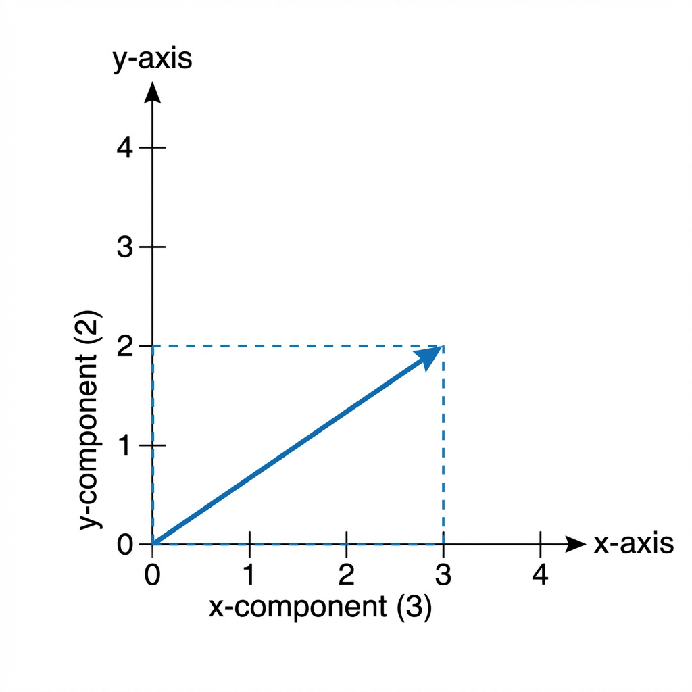
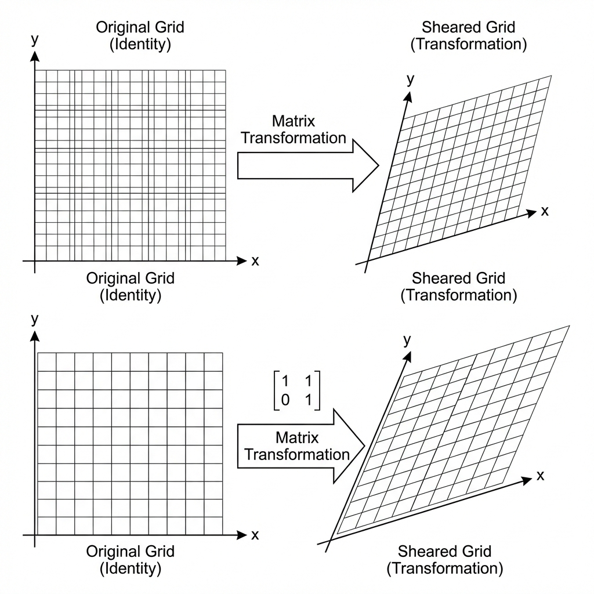
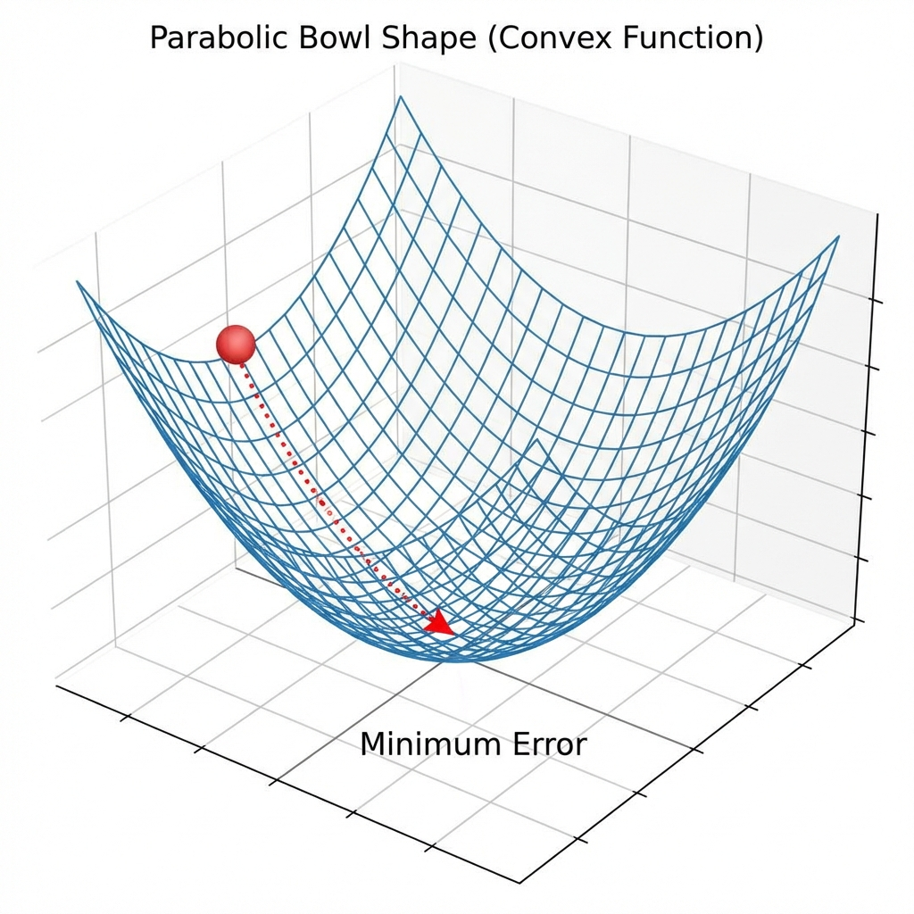
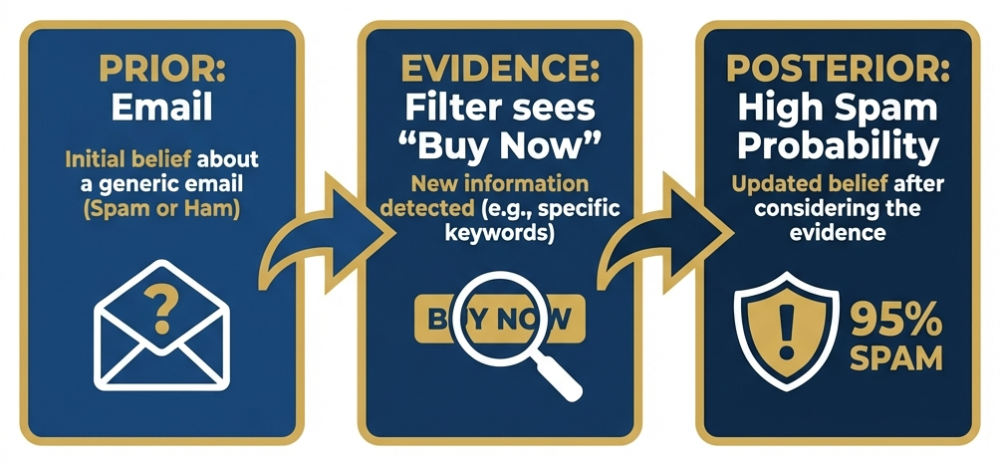

Mathematics for AI
Course: Computer Systems Engineering
Module: Artificial Intelligence (EIARI4A)
Topic: Linear Algebra, Calculus, and Probability for Machine Learning
Reading Time: ~90 Minutes
By the end of this chapter, you will be able to:
1. Translate mathematical notation (vectors, summation) into executable NumPy code.
2. Operate on high-dimensional data using Matrix Multiplication (Dot Product).
3. Explain how Derivatives and Gradients drive the learning process in AI.
4. Visualize Probability Distributions to understand data uncertainty.
5. Implement a basic Gradient Descent algorithm from scratch.
Mathematics is not a barrier to entry; it is the engine under the hood. In this chapter, we demystify the equations found in AI papers. We adopt a "Math as Code" approach: for every intuition we introduce, we will immediately see the refined formula, and then write the corresponding Python implementation. We focus on the big three: Linear Algebra (Data Structure), Calculus (Optimization), and Probability (Uncertainty).
1. Linear Algebra: The Structure of Data
1.1 Vectors and Spaces
1. The Concept (Intuition)
Before we look at code, what is a vector?
Geometrically, a vector is an arrow in space. It has:
1. Direction: Where it points.
2. Magnitude: How long it is.
In Computer Science, we flatten this arrow into a simple list of numbers. These numbers are coordinates—instructions on how to travel from the origin $(0,0)$ to the tip of the arrow.

2. The Formula (Math & Code)
A vector $\mathbf{x}$ in $n$-dimensional space ($\mathbb{R}^n$) is written as a column:
$$ \mathbf{x} = \begin{bmatrix} x_1 \ x_2 \ \vdots \ x_n \end{bmatrix} $$
import numpy as np
# A vector is just a 1D Array
x = np.array([3, 2])
3. AI Application (Why do we care?)
In AI, everything is a vector.
-
Natural Language Processing (NLP): Words are converted into "Word Vectors" (Embeddings). The word "King" might be
[0.9, 0.2, ...]. The direction of the arrow captures the meaning of the word. -
Recommender Systems: You are a vector. Netflix represents your taste as a list of numbers (e.g.,
[LikesAction, LikesRomance, LikesAnime]). Finding a movie you'll like is just finding another vector pointing in the same direction.
1.2 Matrices as Transformations
1. The Concept (Intuition)
A Matrix is often taught as a "grid of numbers". This is boring and misses the point.
In AI, think of a Matrix as a Machine that inputs a vector and outputs a new, transformed vector. It warps space. It can rotate, stretch, or shear the geometric grid that the vectors live on.

2. The Formula (Math & Code)
When we multiply a vector $\mathbf{x}$ by a matrix $\mathbf{A}$, we apply the transformation:
$$ \mathbf{Ax} = \mathbf{b} $$
# The Transformation Machine (Matrix)
A = np.array([
[1, 1],
[0, 1]
]) # This is a "Shear" matrix
# The Input Vector
x = np.array([2, 2])
# Apply Transformation
b = A @ x
# Result: [4, 2] -> The y-value stayed same, x-value shifted!
3. AI Application (Why do we care?)
Neural Networks are just giant chains of matrix transformations.
-
Layer 1: Rotates the input image data.
-
Layer 2: Re-scales it.
-
Layer 3: Warps it until the "Cat" pixels are separated from the "Dog" pixels.
When you see a Deep Learning paper with 100 layers, it just means they are applying 100 consecutive geometric distortions to the data until the answer becomes obvious.
1.3 The Dot Product
1. The Concept (Intuition)
How do we know if two vectors are similar? We use the Dot Product.
It effectively measures the alignment between two arrows.
-
Pointing same way? High score.
-
Perpendicular ($90^\circ$)? Zero.
-
Opposite way? Negative score.
2. The Formula (Math & Code)
$$ \mathbf{a} \cdot \mathbf{b} = \sum_{i=1}^{n} a_i b_i $$
# Feature Vector (e.g., [Study Hours, Sleep Hours])
inputs = np.array([2, 5])
# Weights (Importance of each feature)
weights = np.array([0.8, 0.1])
# Weighted Sum (Dot Product)
score = np.dot(inputs, weights)
# Calculation: (2*0.8) + (5*0.1) = 1.6 + 0.5 = 2.1
3. AI Application (Why do we care?)
This simple operation is the heartbeat of the Attention Mechanism in Transformers (GPT-4).
-
User Query: "What is the capital of France?" (Vector A)
-
Database Document: "Paris is the capital..." (Vector B)
-
Dot Product: High match! The model "pays attention" to this document.
Deep Learning is essentially billions of Dot Products calculating similarity scores between pieces of information.
1.4 Eigenvalues and Eigenvectors
1. The Concept (Intuition)
If a Matrix spins and stretches everything, is there anything that stays the same?
Yes. Eigenvectors are the "stubborn" vectors that refuse to rotate. They only get stretched (scaled).
The amount they stretch is the Eigenvalue.
2. The Formula (Math & Code)
$$ \mathbf{A}\mathbf{v} = \lambda \mathbf{v} $$
Where $\mathbf{v}$ is the Eigenvector (direction) and $\lambda$ is the Eigenvalue (scaling factor).
3. AI Application (Why do we care?)
This is the math behind Principal Component Analysis (PCA).
-
Imagine a cloud of data points (e.g., customer data).
-
The Eigenvectors point along the "main axes" of the cloud—the directions where the data varies the most.
-
Application: We use this to Compress Data. If we only keep the top 2 Eigenvectors, we capture 90% of the information with only 10% of the storage. This is crucial for reducing noise and training models faster on massive datasets.
2. Calculus: The Engine of Learning
2.1 The Gradient and Descent
1. The Concept (Intuition)
AI models start "dumb" (random weights). They learn by making mistakes and correcting them.
Imagine you are standing on a foggy mountain at night. You want to get to the valley (Minimum Error). You can't see the bottom, but you can feel the slope of the ground under your feet.
-
Slope: Tells you which way is Up.
-
Descent: You step in the opposite direction (Down).

2. The Formula (Math & Code)
The Gradient ($\nabla f$) is a vector of partial derivatives pointing Uphill.
$$ \theta_{new} = \theta_{old} - \text{LearningRate} \times \nabla f $$
x = 10.0 # Start position
lr = 0.1 # Step size (Learning Rate)
grad = 2 * x # Calculate Slope (Gradient of x^2 is 2x)
x = x - lr * grad # Step Downhill
print(x) # 8.0 (Closer to 0)
3. AI Application (Why do we care?)
This "ball rolling down a hill" algorithm (Gradient Descent) is how ALL Neural Networks learn.
-
Loss Function: The "Mountain". It represents the difference between the model's guess and the correct answer.
-
Training: We calculate the gradient of the Loss with respect to millions of parameters (weights) and nudge them all slightly "downhill". After millions of steps, the model reaches the bottom: it has "learned" to categorize the image or translate the text with minimal error.
2.2 The Chain Rule
1. The Concept (Intuition)
Neural networks are deep. They are layers upon layers of functions:
$$ y = f(\text{Layer3}( \text{Layer2}( \text{Layer1}(x) ) )) $$
If the output is wrong, who is to blame? Layer 3? Layer 1?
The Chain Rule tells us how to ripple the error backwards through the chain, assigning "blame" (gradient) to each link.
2. The Formula (Math & Code)
$$ \frac{dz}{dx} = \frac{dz}{dy} \times \frac{dy}{dx} $$
3. AI Application (Why do we care?)
This is the math behind Backpropagation.
Without the Chain Rule, we could calculate the error, but we wouldn't know how to update the weights in the first layer of a deep network. The Chain Rule allows us to train "Deep" networks rather than just shallow ones, enabling the modern AI revolution.
3. Probability: The Language of Uncertainty
3.1 Bayes' Theorem
1. The Concept (Intuition)
AI rarely deals with certainties. It deals with probabilities.
Bayes' Theorem is a logic engine for updating your beliefs.
-
Prior: What you believed before (e.g., "Most emails are not spam").
-
Evidence: What you just saw (e.g., "This email contains the word 'Viagra'").
-
Posterior: Your new belief (e.g., "Okay, now it's probably spam").

2. The Formula (Math & Code)
$$ P(A|B) = \frac{P(B|A) \times P(A)}{P(B)} $$
# Toy Spam Filter Example
p_spam = 0.4 # Prior: 40% of mail is spam
p_word_given_spam = 0.8 # Likelihood: "Buy" appears in 80% of spam
p_word_given_ham = 0.1 # "Buy" appears in only 10% of normal mail
# Total probability of seeing "Buy"
p_word = (p_word_given_spam * p_spam) + (p_word_given_ham * 0.6)
# Update Belief (Bayes)
p_spam_given_word = (p_word_given_spam * p_spam) / p_word
print(f"Chance of Spam: {p_spam_given_word:.2%}")
3. AI Application (Why do we care?)
Bayesian reasoning is fundamental to Generative AI and Robotics.
-
Self-Driving Cars: A car uses sensors (Evidence) to update its map of the world (Posterior). "I thought the lane was clear (Prior), but the Lidar saw a shape (Evidence), so now I believe there is a pedestrian (Posterior)."
-
Active Learning: Models use uncertainty (Bayesian Uncertainty) to decide which data they need to learn from next.
4. Summary
We have rebuilt our mathematical foundation.
-
Linear Algebra gave us the Structure (Vectors/Matrices) to represent data.
-
Calculus gave us the Engine (Gradients) to optimize and learn.
-
Probability gave us the Logic (Bayes) to reason under uncertainty.
In Week 3, we will stop doing this math by hand and start using NumPy and Pandas to do it at scale.
Test Your Knowledge
Ready to check your understanding of this week's material? Take the interactive quiz now!
Start Quiz